This is a Necromancer challenge from vulnhub.com. You can obtain the virtual machine from: here
We found our target with:
netdiscover -r 10.0.0.1/24
As usual scan the target:
nmap -sS -T5 -Pn -n 10.0.0.137
Didn't find anything so lets look for all ports:
nmap -sS -T5 -Pn -n -p- 10.0.0.137
There is no open TCP ports on the target. So let's look to the udp:
nmap -sU -T5 -Pn -n -p- 10.0.0.137
Only single 666(doom) Udp port open...
So i try to connect to port 666 with ncat with no result... At this point i stuck a little bit :) but finally decide to listen for trafic from the target. Fire up wireshark and start sniffing. Found this interesting packets: 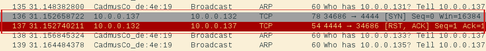
Lets catch incoming connection with ncat and see what will happen: 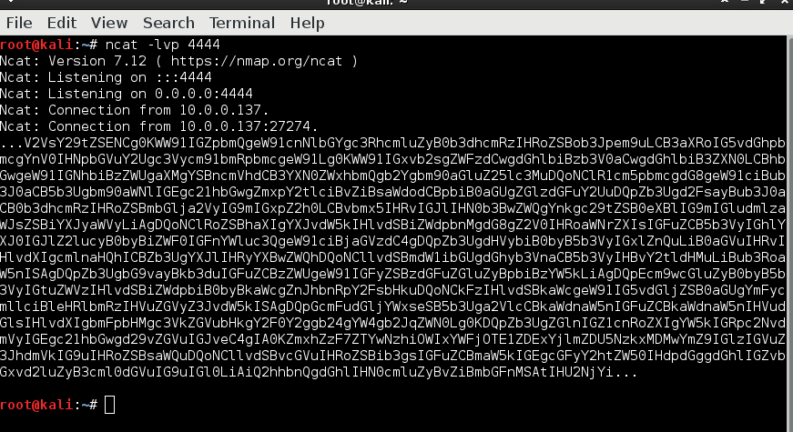
Got some jiberish string... I paste it in my Owasp Zap and able to decode it as base 64: 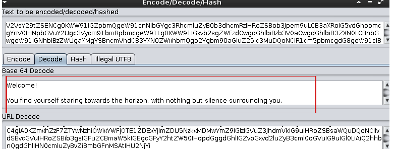
The full text is bellow: 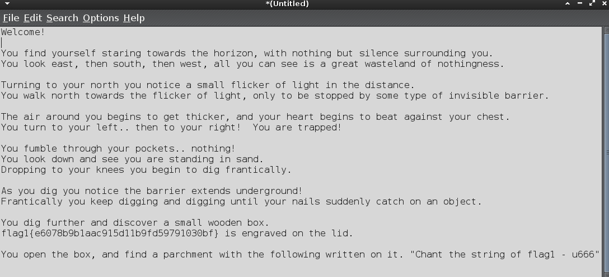 It's talk about send some string to the 666udp. After a while i ended up send decoded flag1 (opensesame) to the Udp 666 on the target: 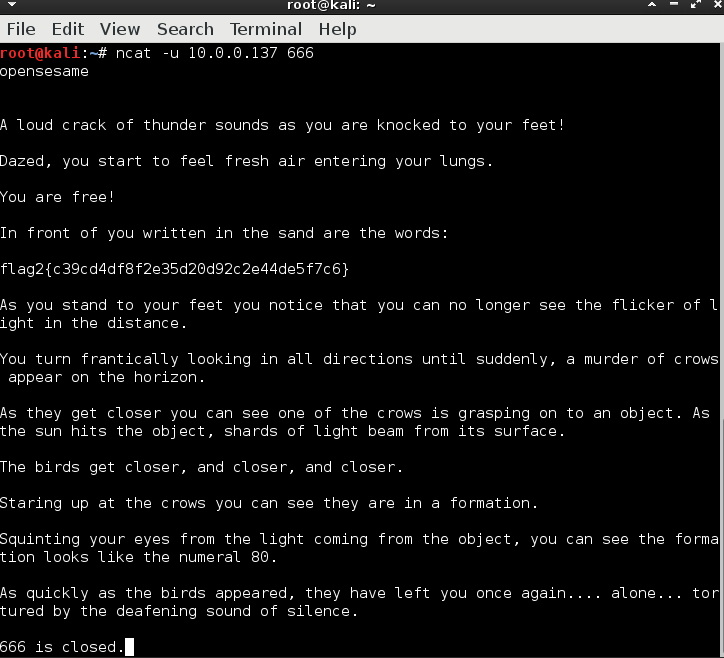
This is give as flag2 and said something about close 666 and open 80. So nmap confirm port 80 on the target is open it's time to browse the site. 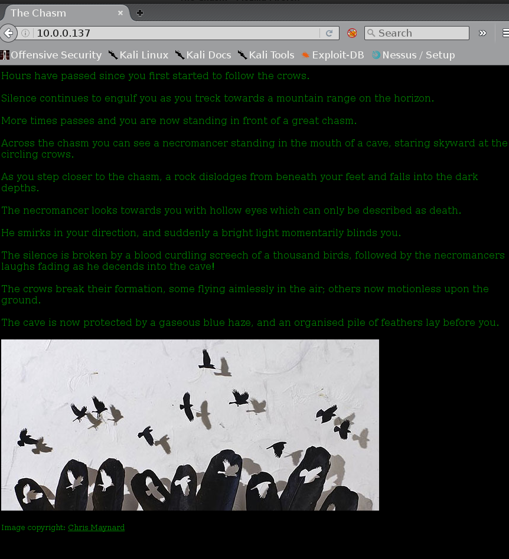 I scan with nikto, looking around with firebug and found nothing interesting. It should be something about the picture so i download it and look carefully on it. 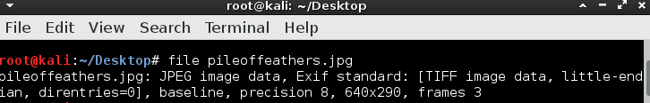
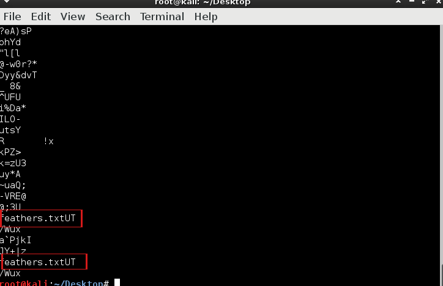
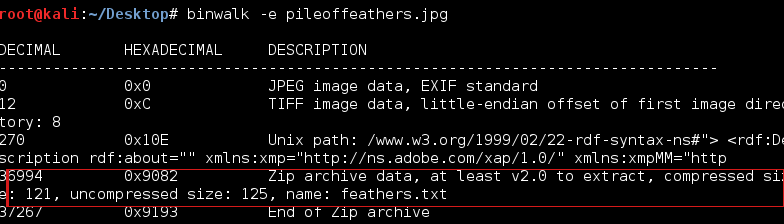 Looks like there is zip archive in the picture so after unzip the pic we recived feathers.txt contained base64 string. Decide to use my universal Zap to decode it and there is flag number 3 and some directory: 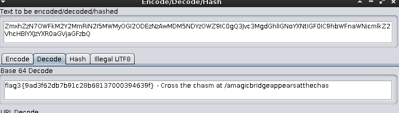
I explore the recently founded directory, there is a second picture. I examine this picture for a long time but unable to find anything in it. At this point i stuck big time! Run a lot of scans and fuzzers but unable to find anything. So i was force to look of walkthrough of someone to get some type of joker. Quikly i see other dudes able to find talisman file after fuzzed the target. That's strange because I run dirbuster with alot of dictonaries, but that didn't work for me. Look like dirbuster didn't work. So after I already know what to look for I quickly switch to wfuzz using same dictonary as in dirbuster but wfuzz found what I searched: 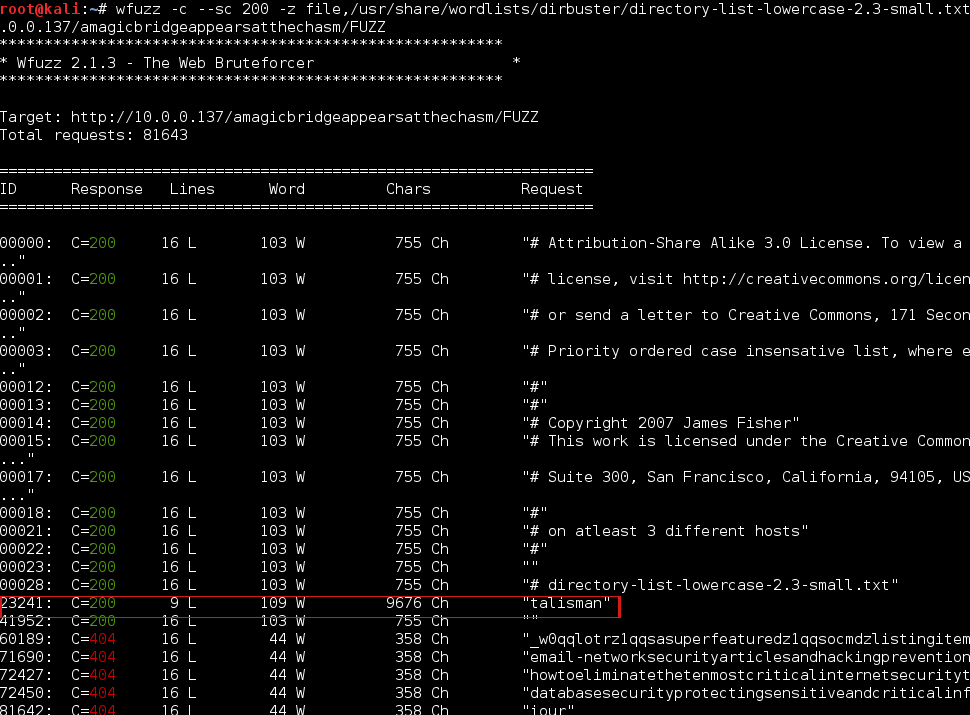 We found talisman :) At first it's look like binary file. Stucked again! So i decide to go to sleep and fight tomorrow witch a fresh head.